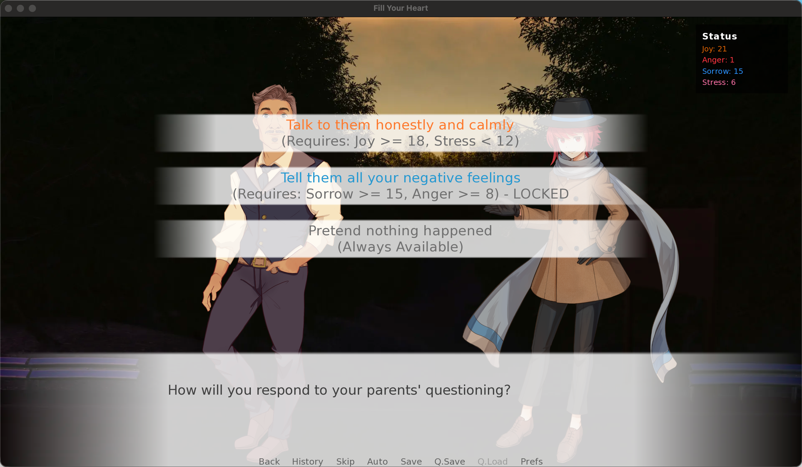

FILL YOUR HEART
原创互动叙事游戏策划全案——世界观搭建、10万+字符互动文本设计、四维数值模型与 Ren'Py 交互落地，均由本人独立完成。


一、 剧情结构总览
全篇由序章 + 五幕 + 结局构成，人生阶段与情绪主题一一对应，四维数值贯穿始终，将碎片化的成长片段串成一条完整的因果链：
| 章节 | 内核 | 关键情节 |
|---|---|---|
| 序章｜游戏机制 | — | 四维情感系统（喜/怒/哀/压）；"内心自我"角色在每个阶段展开哲思对话，反馈当前主导情绪；结局由占比最高的维度决定。 |
| 第一幕｜小学篇 | 家庭氛围的启蒙 | 在父母争吵声中醒来 → 妈妈强装笑容催促上学 → 早餐路上聊成绩 → 认识 Leo 与 Ann，触及梦想讨论与性别刻板印象 → 课堂被点名批评 → 内心自我发问："做满足的猪，还是不满足的人？" |
| 第二幕｜初中篇 | 同伴与权威的张力 | 分班后与 Leo、Ann 不同班；Leo 的足球梦被父母终止；一年后 Leo 多日缺席，抉择要不要寻找；天台戏"我爸说我没用"；回家后向爸爸提起想帮 Leo，抉择接受或反抗父亲的阻拦。 |
| 第三幕｜高考篇 | 结果与自我价值 | 驾考意外熄火、教练苛责；成绩公布后抉择向 Leo 报喜还是沉默；志愿填报大城市或家附近；录取专业被调剂。 |
| 第四幕｜大学篇 | 认识更大的世界 | 公交车上认识来自农村的 Max；Max"没有退路，只能拼命卷"的人生哲学；与 Max 回顾高中生活。 |
| 第五幕｜毕业抉择篇 | 社会时钟的压力 | 父母来电施压（"你表姐都读博了"）；与内心自我对话，直面迷茫与恐惧。 |
| 结局｜四维决定命运 | — | 四种结局+ 同伴尾声：Ann 成为医生、Leo 从事弹性工作、Max 留在大城市。 |
核心角色
| 角色 | 身份 | 关系张力 / 象征 |
|---|---|---|
| 爸爸 | 权威型家长 | 习惯用反问句施压，是家庭权威的具体化身。 |
| 妈妈 | 情感缓冲带 | 试图调和家庭氛围，但有时也会无意识地施加期望。 |
| Leo | 被压抑天赋的挚友 | 足球梦被迫中止，是"被规训的天赋"的象征。 |
| Ann | 被忽视的姐姐/女儿 | 因重男轻女的家庭氛围被迫早熟，承担照顾弟弟的责任。 |
| Max | 寒门拼搏的对照组 | 农村出身、退无可退的现实压力，与主角形成阶层对照。 |
| yourself | 潜意识具象化 | 打破第四堵墙的"内心自我"，在关键节点提供反思空间。 |
二、 玩家画像与市场定位
基于互动叙事与内容型游戏市场的洞察，明确产品的目标受众与商业对标：
| 维度 | 定位分析 |
|---|---|
| 核心用户 | 18-30 岁泛叙事玩家，尤其关注成长、自我探索与情感体验的用户群体。 |
| 用户核心诉求 | 沉浸式情感代入、对现实心理困境（原生家庭、选择焦虑）的共鸣与和解、多分支重玩探索。 |
| 核心体验目标 | 拒绝功利化的"讨好 NPC"，引导玩家关注自身选择对内心情感的影响，达成高度个人化的成长轨迹。 |
三、 剧情节点策划拆解案例
以两个真实剧情节点为例，展示"系统机制如何落地"与"同一主题如何跨时间点串联"两种策划思路：
与 Ann、Leo 在公园谈心后得知朋友的家庭困境，主角情绪低落，深夜被心急如焚的父母寻回。游戏在此刻主动打破第四堵墙，直接向玩家展示当前四维数值原文："Let's take a look at your current attributes."——随后进入三选一对话。
$ peace_available = (joy >= 18 and stress < 12)
$ negative_available = (sorrow >= 15 and anger >= 8)
menu:
"Talk to them honestly and calmly (Requires: Joy>=18, Stress<12)" if peace_available:
jump peace
"...LOCKED" if not peace_available:
"You need: Joy >= 18 (current: [joy]), Stress < 12 (current: [stress])"
jump status
"Tell them all your negative feelings (Requires: Sorrow>=15, Anger>=8)" if negative_available:
jump negative
"...LOCKED" if not negative_available:
"You need: Sorrow >= 15 (current: [sorrow]), Anger >= 8 (current: [anger])"
jump status
"Pretend nothing happened (Always Available)":
jump nothing

策划设计意图：没有用单一数值卡关，而是用"双变量同时满足"作为解锁条件——玩家必须同时攒够正向情绪、压低负向情绪，才能"心平气和地沟通"；反之要同时攒够哀伤与愤怒，才能"彻底爆发"。锁定文案直接显示数值差距（如 "You need: Sorrow>=15 (current: 9)"），把黑箱数值判定转译成玩家能理解的引导，而非单纯的灰色按钮。第三个选项永远可选，避免玩家被数值卡死。
"要不要为朋友冒险"这个主题，被刻意安排在初中篇的三个不同节点反复出现——从"要不要找 Leo"，到"要不要为 Leo 反抗爸爸"，再到"要不要向 Leo 坦然报喜"。玩家每一次的选择都不是孤立事件，其数值效果会持续累积，共同汇入同一套四维评分系统，最终影响结局判定。
策划意图：比起用一次高潮事件决定情绪走向，让同一个道德困境在三个不同的人生阶段反复叩问玩家，更能体现"性格是长期选择累积而成"的核心命题，三次选择的数值最终影响故事走向与发展，任何单次选择都不会独自决定结局，但每一次都在无声地塑造它。
四、 系统设计与体验目标
核心设计问题
如何避免玩家为了达成"好结局"而进行功利化、机械化的套路选择？
策划方案：废除传统单向度的好感度数值，设计四维动态情绪池（Joy, Sorrow, Anger, Stress）。让玩家的行为长期影响主角的心理状态，明白自己动态的选择影响结局走向，引导玩家真实表达自我。
四维情绪系统与参数配置
| 情绪变量 | 参数配置 | 设计依据与体验目标 |
|---|---|---|
| Joy (喜悦) | Cap: 63.0 每点贡献度 ≈1.6% |
结局设计：四者中容量最大，避免结局被轻松达成。需要玩家在关键节点做出持续且稳定的积极抉择，提升达成 Ending A 时的成就感。 |
| Stress (压力) | Cap: 30.0 每点贡献度 ≈3.3% |
敏感变量：较小的容量配置使得连续的负向抉择能够迅速将压力推高占比，在特定节点快速制造应激冲突与选项锁闭（如上方案例中的 Stress < 12 门槛）。 |
| Anger (愤怒) | Cap: 25.0 每点贡献度 ≈4.0% |
突然爆发：四者中容量最小、单点贡献度最高，用于模拟"一次剧烈的爆发直接打断既定路线"，也是结局判定优先级最高的变量。 |
| Sorrow (哀伤) | Cap: 50.0 每点贡献度 ≈2.0% |
情感共鸣：作为最常触发的共情情绪，吸收日常剧情抉择中的情感积累。 |
归一化公式：weighted_x = (x ÷ cap_x) × 100，四者中归一化占比最高的即为"主导情绪"，决定最终结局。代码里没有额外的权重系数——不同的 cap 值本身就等效实现了非对称权重：cap 越小，同样 1 点的变化对最终占比的影响就越大（这也是"每点贡献度"这一列的由来）。
五、 关卡体验与叙事节奏
全剧本在节奏设计上遵循"情感压抑 ➔ 冲突爆发 ➔ 终局抉择"的张力曲线，五幕分别对应小学、初中、高考、大学、毕业抉择五个人生阶段：
六、 四重结局走向
| 结局 | 触发逻辑 | 叙事内容 |
|---|---|---|
| Ending A 自我和解 |
fallback（else 分支）Anger / Sorrow / Stress 归一化占比均未成为最高值（即 Joy 占比最高） |
疗愈结局：主角选择接纳过去与伤痛，在海边达成内心的平静与自我和解。 |
| Ending B 牢笼 (Bad End) |
highest == w_stressStress 归一化占比最高（判定优先级第 3） |
应激结局：主角彻底放弃反抗，活成了他人期待的样子。"这是你想要的生活吗？""没时间了，下午还有会。" |
| Ending C 打破秩序 (Rebel) |
highest == w_angerAnger 归一化占比最高（四者中判定优先级最高） |
反抗结局：彻底撕破社会期待与家庭捆绑，虽然前路充满未知，但选择了完全属于自己的道路。 |
| Ending D 芸芸众生 (Normal) |
highest == w_sorrowSorrow 归一化占比最高（判定优先级第 2，仅次于 Anger） |
普通结局：学会向现实妥协，按部就班步入工作，平静地融进大都市的汹涌人潮中，留下淡淡的遗憾。 |
注：四维归一化后取最大值作为主导情绪；当数值打平时，代码按 Anger → Sorrow → Stress → Joy 的固定顺序判定，而非显式的加权决胜规则。
七、 Demo 测试与玩家运营方案
本节整合两部分内容：已完成的分章节 QA 测试记录，以及面向 Demo 上线后的玩家运营规划：
1. 已完成：分章节 QA 测试 (Completed)
五个章节版本（小学 / 初中 / 高考 / 大学 / 毕业）分别按统一测试清单独立验收，以下为其中一份实测记录（Secondary School Part，2026年1月30日，macOS & Windows）：
| 测试项 | 结果 | 说明 |
|---|---|---|
| 运行环境兼容性 | Pass | macOS / Windows 双平台运行正常 |
| 功能测试 | Pass | 图文、音效等交互元素响应稳定 |
| 存档 / 读档与状态管理 | Pass | 存读档准确还原游戏状态 |
| 加载速度与系统响应 | Pass | 启动与场景切换流畅、响应迅速 |
| 分辨率与画面比例 | Pass | 多分辨率 / 比例下缩放显示正常 |
| UI 布局与导航 | Pass | 菜单逻辑清晰，点击反馈准确及时 |
| 视觉信息呈现 | Pass | 提示与引导文本清晰易懂、前后一致 |
| 音效测试 | Pass | 音效与画面事件同步、音量均衡 |
五份测试清单均由本人独立执行、逐项记录，作为每个章节版本合并进最终脚本前的发布准入标准。
2. 测试目标与核心指标（计划中）(Metrics & Targets)
• 核心关注指标：Demo 下载量、Act 1-2 首章完成率、分支探索率（二刷率）、玩家评价关键词。
• 问题收集路径：在 Demo 结算界面内置问卷跳转链接，重点采集玩家对"情绪锁闭机制"与结局张力的反馈。
3. 社区运营与内容传播（计划中）(Community Growth)
• 内容阵地：发布开发者日志 (Devlog)，展示"四维情绪系统"的设计思考与角色金句片段，吸引叙事游戏核心玩家。
• 渠道布局：主阵地设在 Itch.io 及 Steam 社区，联合叙事向游戏 Discord/Reddit 社区发起 Demo 试玩活动与 UGC 结局讨论。
八、 开发反思
迭代：平滑前期压力曲线，保障叙事铺垫
发现问题：早期测试显示，前两章数值设置过剧烈，导致部分路径在 Act 2 提前触发 Stress 锁闭，破坏了剧情铺垫。
调整方案：降低 Act 1-2 日常选项的 Stress 增量，将高压冲突集中放置在 Act 3 高潮节点，优化体验节奏。
迭代：增加"内心自我"角色，降低系统理解成本
发现问题：纯后台计算数值容易让玩家对"为什么进入特定分支"感到困惑。
调整方案：在章末加入"内心自我"角色，通过哲思提问反馈当前主导情绪，既维持了沉浸感，又完成了系统状态的明示。
已知局限：结局打平时的判定顺序
发现问题：结局判定通过 if/elif 链依次比较四个归一化数值，当两个变量数值恰好打平时，判定顺序固定为 Anger → Sorrow → Stress → Joy，而非显式的加权决胜规则，属于实现时的简化处理。
后续方向：计划引入次级情绪提示或更明确的平局判定说明，让玩家在数值接近时也能获得可解释的结局原因。